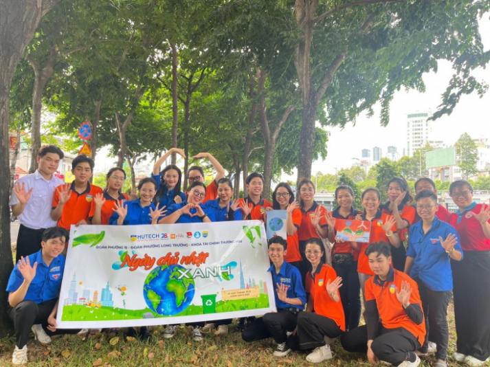
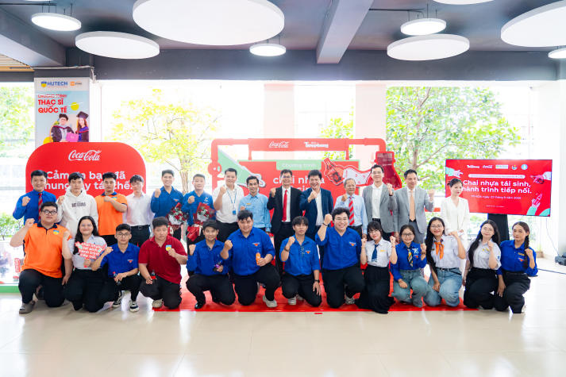
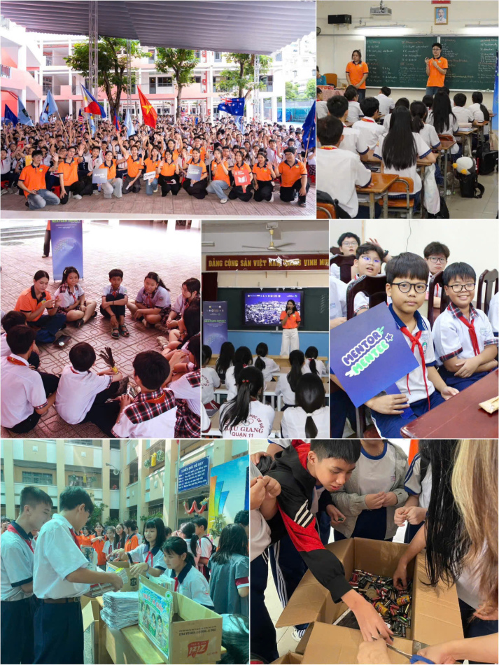

01TỪ BỮA ĂN MỖI NGÀY
Chất thải thực phẩm
Thức ăn thừa, vỏ rau củ, trái cây và phần bỏ đi khi chế biến.
Mẹo phân loại ↗
Gạn bớt nước, để riêng trong dụng cụ có nắp và chuyển giao theo lịch thu gom. Tách túi, dây buộc và bao bì khỏi thức ăn.
Cùng cộng đồng sinh viên HUTECH biến việc phân loại rác thành thói quen. Từ giảng đường đến nơi bạn sống, một hành động nhỏ hôm nay sẽ mở đầu cho hành trình xanh hơn.
Không cần hoàn hảo.
Chỉ cần bắt đầu từ một món rác.

HUTECH GREEN CAMPUS · TOGETHER, GREENER.Đừng nhìn mỗi màu thùng.
Hãy nhìn vào loại rác và hướng dẫn thu gom.
Thức ăn thừa, vỏ rau củ, trái cây và phần bỏ đi khi chế biến.
Giấy khô sạch, chai nhựa, lon kim loại và vật liệu được điểm thu gom tiếp nhận.
Giấy vệ sinh đã dùng, tã và những món không thuộc hai nhóm trên.
Pin cũ, bóng đèn, đồ điện tử: để riêng. Không bỏ lẫn vào rác tái chế thông thường. Tìm điểm thu hồi có tiếp nhận loại rác này.
Tra cứu ↗Từ chai nước sau giờ học đến chiếc pin đã hết. Gõ tên vật dụng để biết cách xử lý.
Hướng dẫn tham khảo. Khả năng tiếp nhận vật liệu có thể khác nhau ở từng điểm thu gom.
6 món đồ quen thuộc.
Chọn nhóm rác, nhận ngay lời giải thích.
Những hoạt động môi trường được HUTECH chia sẻ.
Chạm vào mỗi câu chuyện để xem nguồn gốc.
Thu gom rác, làm sạch không gian công cộng và lan tỏa thói quen bảo vệ môi trường trong cộng đồng.
Nguồn ảnh & bài: Đoàn – Hội HUTECH ↗
PHÂN LOẠI & TÁI CHẾ ↗Sinh viên HUTECH tham gia chương trình khuyến khích thu gom chai nhựa, lon nhôm và hình thành thói quen phân loại.
Nguồn ảnh: Tổ Media – HUTECH ↗
GIÁO DỤC MÔI TRƯỜNG ↗Sinh viên PR HUTECH đồng hành cùng học sinh tìm hiểu môi trường, thu gom giấy cũ, pin và rác điện tử.
Nguồn ảnh & bài: Khoa KHXH & QHCC ↗Dùng thùng hoặc túi sẵn có, dán nhãn dễ đọc. Đặt tại nơi bạn thường tạo ra rác để dễ nhớ hơn.
Đổ hết đồ uống, tách thức ăn thừa khỏi bao bì. Giữ giấy khô sạch, tránh làm bẩn các vật liệu khác.
Hỏi đơn vị thu gom về lịch nhận và cách đóng gói. Chuyển đồ tái chế đến nơi có tiếp nhận đúng vật liệu.
Mỗi ngày một việc nhỏ. Đánh dấu việc bạn đã làm và biến sự thay đổi thành thói quen của riêng mình.
Tiến độ được lưu trên trình duyệt của bạn.
Những câu hỏi thường gặp khi bắt đầu phân loại.
Màu sắc và cách bố trí thùng có thể khác nhau. Hãy ưu tiên tên nhóm rác, hình hướng dẫn và yêu cầu của đơn vị thu gom tại nơi bạn sống.
Không phải mọi loại nhựa đều được mọi điểm thu gom nhận. Kiểm tra vật liệu và tình trạng chai, loại bỏ chất còn chứa bên trong rồi hỏi nơi tiếp nhận. Bao bì từng đựng hóa chất nguy hại cần xử lý riêng.
Bạn có thể bắt đầu bằng các túi hoặc hộp có nhãn. Giữ riêng đồ tái chế khô sạch và pin cũ, đồng thời hỏi ban quản lý hoặc đơn vị thu gom về phương án chuyển giao.
Khung ba nhóm rác tham khảo hướng dẫn kỹ thuật được đăng trên Cổng thông tin Bộ Công Thương. Các ví dụ có mục đích giáo dục; cách thu gom cụ thể cần theo hướng dẫn địa phương. Đọc nguồn tham khảo ↗ Hình ảnh hoạt động được dẫn từ website HUTECH; liên kết bài gốc nằm ngay dưới từng ảnh. Logo tên dự án được thiết kế theo mẫu bạn cung cấp.